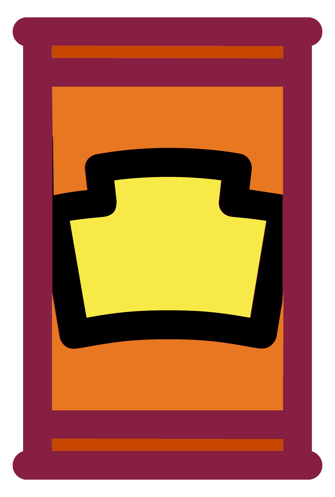

Assignment Dates
- Suggested Due Date: By 11:59 PM on Friday September 9, 2022.
- Grace Period: Ends at 11:59 PM on Friday, December 2, 2022.
What I Want You to Do
You will analyze a food or beverage label to determine how it functions as a technical document. You will identify the different kinds of information included on the label and compare that information to the Characteristics of a Technical Document & Measures of Excellence in Technical Documents.
xxx. Your project will include photos of the food or beverage container to illustrate your analysis.
Why I Want You to Do It
To write technical documents, you have to recognize technical writing when you see it and you have to know what makes a technical document effective. This activity gives you a chance to demonstrate your ability to analyze a technical document and draw conclusions for how well it accomplishes its purpose.
Show/Hide Relevant Course Objectives
Relevant Course Objectives
- How to analyze your audience and purpose so that you can choose the best way to present information clearly and effectively.. [CLO 1]
- How to write documents you may encounter in the workplace, such as letters, memos, instructions, proposals, reports, and presentations. [CLO 4]
- How to use colors, layout, and formatting that make your documents understandable and easy to read. [CLO 6]
- How to take advantage of design principles, including contrast, repetition, alignment, and proximity, to communicate your ideas effectively. [CLO 6]
- How to choose words, phrases, sentences, lists, and other text features to communicate effectively with readers. [CLO 7]
Where You Can Find Help
- Markel & Selber, Chapter 1, “Understanding the Technical Communication Environment”
- Markel & Selber, Chapter 2, “Understanding Ethical and Legal Considerations”
- Markel & Selber, Chapter 5, “Analyzing Your Audience and Purpose”
- Label Analysis Criteria
- Tip Sheet: Label Analysis
- Additional Resources:
How You Do It
- Choose a food or beverage package that meets these requirements:
- You have physical access to the item. You need an item that you can examine closely and take photographs of.
- The package is large enough to include complete label details. Don’t choose anything that states it is “not labeled for individual sale,” or something similar. A label with few details is likely to be harder to analyze.
- The food or beverage is relatively recent. In other words, a package from 1992 won’t work.Choose something made or packaged in the last year.
- Your package is primarily labeled in English. It’s fine if it includes a second language however (for instance, details are included in English and French so the item can be sold in the U.S and Canada).
- Your food or beverage is legal for you to have in the U.S. For example, if you are not 21 years old, do not choose an alcoholic beverage package.
- Review the Label Analysis Criteria to understand the requirements for the Full Draft.
- Download the Label Analysis Form and use the information the form to record details on your label and provide your analysis.
- xxx
- xxx
- Obtain access to the materials for your topic. Remember to take photos that you can use to illustrate your Full Draft.
- Use the information in the textbook and on the Tip Sheet: Label Analysis to compose your instructions.
-
Success Tip
You should be able to answer “True” to each question before you submit your work to the Full Draft Submission. If you do not meet each of the criteria listed, your draft will be marked Incomplete and you’ll need to revise.
Review your draft by comparing it to the Label Analysis Self-Check.
- Choose one of these options based on your Self-Check:
- If you answered “True” to every question, move on to the next step. You’re ready to submit your work.
- If you did not answer “True” to every question, follow this process:
- Return to your draft and revise so that you can answer “True.”
- Review your draft with the Label Analysis Self-Check after you revise.
- If you answered “True” to every question, move on to the next step. You’re ready to submit your work.
- If you did not answer “True” to every question, continue revising until you can.
- Submit your Full Draft here once you are ready. See How do I submit an online assignment? if you need help with Canvas.
How to Find Feedback After Your Submit Your Work
- Watch for feedback comments from me—find feedback in annotations and comments on your submissions in Canvas.
- I will mark your work Complete in Canvas Grades, if you have met all the criteria for the assignment.
- I will mark your work Incomplete in Canvas Grades if your draft needs revision OR if you do not submit your work by the end of the grace period.
- Watch for this assignment to reappear in your to-do list if you need to revise.